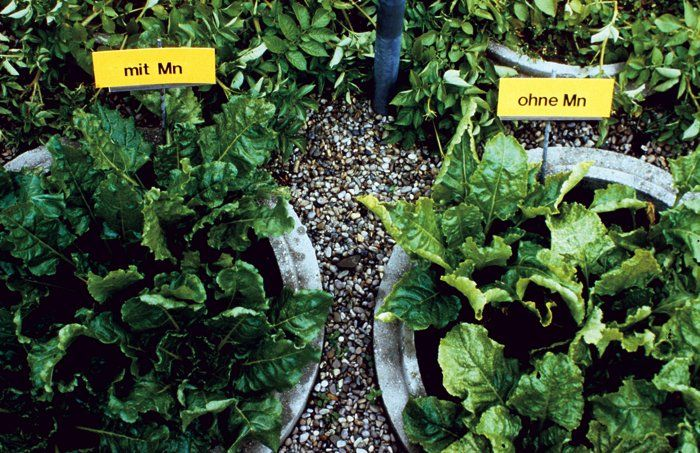

Gewas en voedingsstoffen
Een overzicht over welke voedingsstoffen van belang zijn voor een goede groei van gewassen. Verder hoe je aan plant kunt zien of er een tekort aan een bepaalde voedingsstof is.
Inleiding
Het droge materiaal van planten komt voornamelijk uit lucht en water. De plant bestaat gemiddeld voor 45% uit zuurstof, 45% uit koolstof en 6% uit waterstof. Dat is 96%. De overige 4 % bestaat uit stoffen die uit de bodem opgenomen worden:
1,5% Stikstof1,5% Kalium0,2% Magnesium0,15% Fosfor0,5% Calcium0,1% Zwavel0,01% IJzer0,002% Borium0,002% Zink0,005% Mangaan0,006% Koper0,00001% Molybdeen
Met uitzondering van stikstof zijn al deze stoffen onderdeel van gesteenten. Op een bodem met verweerbare mineralen en met teelt van vlinderbloemigen kunnen planten groeien. In Nederland bevatten de meeste gronden weinig mineralen en moeten deze aangevoerd worden. Je zou denken voer dan verweerbare mineralen aan, bijvoorbeeld in de vorm van gesteentemeel, maar de hoeveelheden die dan aangevoerd moeten worden zijn zo groot dat dat zelden reëel is. Via geconcentreerde gesteentemelen is dat wel mogelijk. Dat zijn bijvoorbeeld kalirijke zouten, kalk (Calcium en magnesium), natuurfosfaat (fosfor) en gips (zwavel). Sporenelementen zijn zo weinig nodig dat bij een goede zuurgraad, goed organische stofgehalte en goede biologische activiteit er meestal voldoende beschikbaar is. Bij gronden die niet zelf voldoende verweerbare mineralen bevatten komt het er op aan goed te bemesten. Mochten er problemen zijn dan laat de plant dat meestal op een specifieke wijze zien. Stikstof In het algemeen is de gehele plant licht van kleur en groeit traag. Stikstofovermaat uit zich in een blauwgroene kleur. Vaak wordt deze kleur als gezond ervaren, maar is dat niet. De plant wordt gevoeliger voor ziekten, de voedingskwaliteit neemt af en smaak en houdbaarheid verminderen.
Stikstofgebrek in mais
Stikstofgebrek in suikerbiet
Fosfor
Fosforgebrek uit zich in een gedrongen groei met donker blad. Het blad kan vaak ook naar het rode of paarse verkleuren. Gewassen kunnen bitter van smaak worden. Bloem- en vruchtzetting verminderen.
Fosforgebrek in suikerbiet
Kalium
Kaliumgebrek uit zich in waterige smaak. Het suikergehalte is laag. Stelen zijn vaak zwak en lang. Bladeren blijven klein en misvormd. Fruit valt te vroeg af ben het oudere blad wordt bruin. Maïs krijgt kleine gele bladeren en de planten vallen snel om.
Kaliumgebrek in mais
Kaliumgebrek in aardappel
Calcium
Weinig calcium geeft gele of bleke bladeren. Bij tomaten en paprika rotten de bloemen. Tomaten kunnen zeer klein blijven. Bonen krijgen gele bladeren met opkrullende randen, kleine planten en zwarte, afstervende scheutpunten. Bij kool geeft calciumgebrek bruine bladpunten, bij bieten gespleten wortels. Bij maïs plakken de bladpunten aan elkaar en de plant blijft klein. Magnesium
Magnesiumgebrek uit zich in geel worden tussen de nerven van het oudere blad. Bij winterpeen, aardappels en bonen worden de kleur en de smaak minder.
Magnesiumgebrek in koolzaad
IJzer
IJzergebrek geeft gele bladeren met groene nerven. Bij bonen geeft ijzertekort vergeling tussen de nerven in oudere bladeren en helemaal geel worden van de jonge bladeren. Zink
Gebrek bij tomaat geeft klein smal blad met zwarte vlekken. Planten blijven klein.
Zinkgebrek in mais
Borium
Boriumgebrek vertraagd de groei aan de groeipunten. Planten hebben kleine, gekreukelde en misvormde bladeren, met grote verkleurde gebieden.
Boriumgebrek in koolzaad
Boriumgebrek in mais
Koper
Kopergebrek vermindert smaak en suikergehalte van groenten en fruit. Het jonge blad krijgt een lichte kleur. Schimmelziektes nemen toe. Bij aardappels krult het jonge blad naar boven. Zwavel
Bij gebrek wordt de hele plant licht van kleur. Het gebrek lijkt op dat van stikstof.
Zwavelgebrek in suikerbiet
Zwavelgebrek in aardappel
Mangaan
Tekort geeft heeft vergeling tussen de nerven van het jonge blad tot gevolg. De groei wordt geremd.
Mangaangebrek in mais

Mangaangebrek in suikerbiet